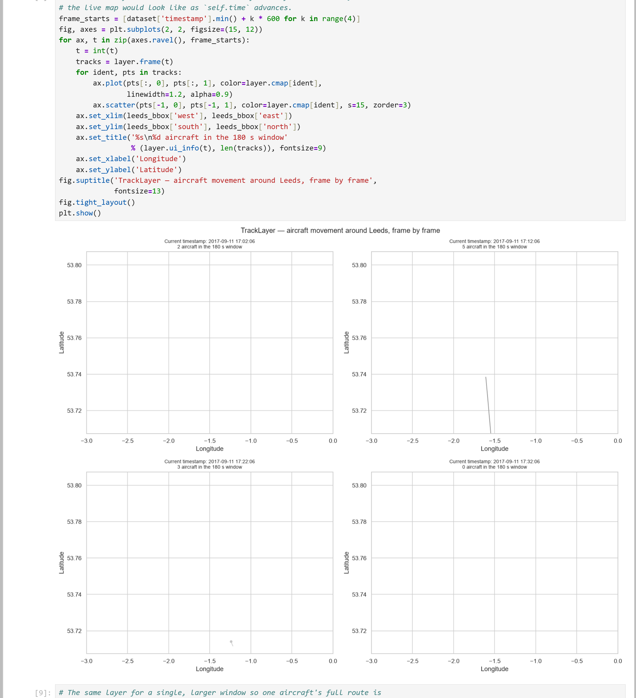

LU ZIYI — Data Science Portfolio
About me
I am a Master's student at the University of Macau, studying data science and data visualization (CISC7204). I work mainly in Python, taking a question from raw, messy data through cleaning, exploration and modelling to a visualization that a reader can actually act on.
I care most about the step between a table and an insight: choosing an encoding that makes the answer obvious, and being honest about what the data does not support. I am currently building out this portfolio with the projects I complete during my coursework.
Technical skills
| Area | Tools |
|---|---|
| Languages | Python 3, SQL (basic), HTML/Markdown |
| Data handling | pandas, NumPy, SciPy |
| Visualization | matplotlib, seaborn, Plotly, Dash, Bokeh |
| Machine learning | scikit-learn (regression, clustering, model evaluation) |
| Environment | Jupyter Notebook / JupyterLab, Anaconda, Git, GitHub |
Project showcase
Flight Movement Analysis — Aircraft Tracks Around Leeds
Research question. How does aircraft traffic behave over time in the airspace around Leeds, and can the raw ADS-B position reports be reduced to a small number of interpretable descriptors of that traffic?
Dataset. 33,766 ADS-B position reports covering 2017/09/11–2017/09/16 from 805 distinct aircraft, distributed as course material for CISC7204.
Visualization.

What the visualization shows. Each polyline is one aircraft, drawn from its position reports joined in time order; the panel shows the traffic visible inside a rolling 180-second window. Joining the reports this way converts 33,766 scattered points into clean, readable tracks — proof that ordering by the reconstructed timestamp recovers real flight paths rather than producing noise.
Key findings.
- The airspace carries 805 distinct aircraft, but observations are heavily skewed: median 18 reports per aircraft against a maximum of 564.
- 72.8 % of all reports are above 20,000 ft, with a secondary cluster at 1,000–5,000 ft — a clear separation between overflights/cruise and terminal traffic.
- Some sampled windows contain no reports at all, so coverage is intermittent rather than continuous.
One limitation. ADS-B reception depends on ground-station coverage and line of sight, so the file records what was received, not every aircraft that was flying. Every count above is therefore a lower bound, and no conclusion about total traffic volume should be drawn from it.
Project repository. data-science-project
Project status. ✅ Completed
How to read this portfolio
Each project entry states the question, the data, the method, what the visualization shows, the honest limits of the result, and a link to the full code. If you want to reproduce anything here, every repository includes a README.md with exact versions and run instructions.
Last updated: October 2026